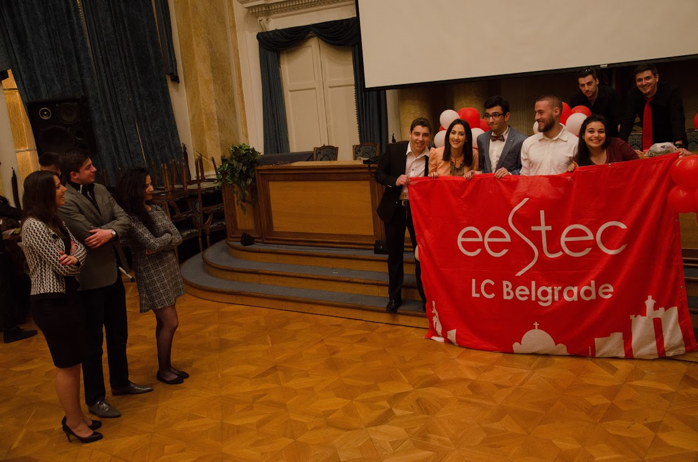

On second special midweek occasion, we are again hosting one of the blogs in series of EESTEC Alumni Founder Stories. Where does the idea for an LC come from? What drives the motivation? What can an individual learn from "startuping" new LC? Read the story of how LC Belgrade was founded, by Dr. Darko Ojdanić.
Here it is. Story from BG. I first heard of EESTEC in the summer 2000 during my studies in Belgrade. Information came from a personal contact from Podgorica, Montenegro, where a local committee was in formation at that time. The fact, that this organization provides possibility to meet other European students, visit interesting places and universities, provided enough motivation at glance. The same was the case for many friends and colleagues, when I approached them with the idea of a new local committee in Belgrade.
The main action plan to start the organization resulted in a bar, in the evening hours, which is a quite typical act for all successful adventures in Balkan:) That bar, informally named Dzakarta, has therefore a cult status for LC Belgrade. The initial cabin crew was formed by: Aleksandar Dragović, Ivan Grujović, Nenad Aleksić and myself.
The issue we bumped into at the beginning (the local political situation at that time was unstable and focused rather on the isolation then openness), motivated us and all other joining students even more. Furthermore, this made us operating within a real team spirit, which was certainly a great initial learning experience for upcoming professional carrier. I am glad, that spirit was successfully being passed from year to year.
 A glimpse of Congress organised by LC Belgrade in April 2016